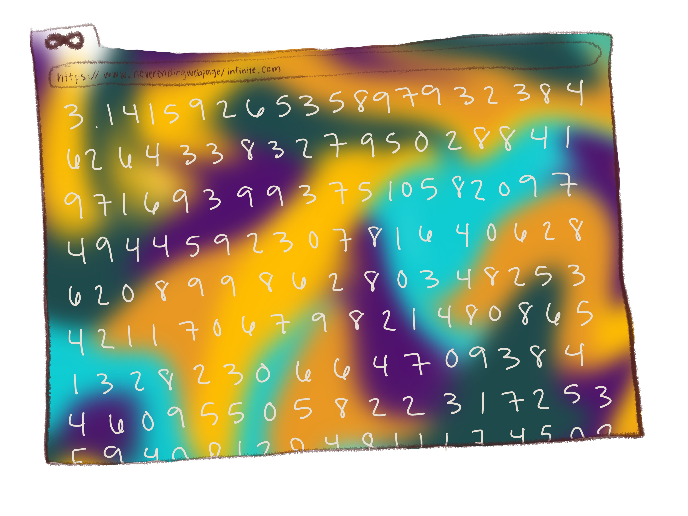
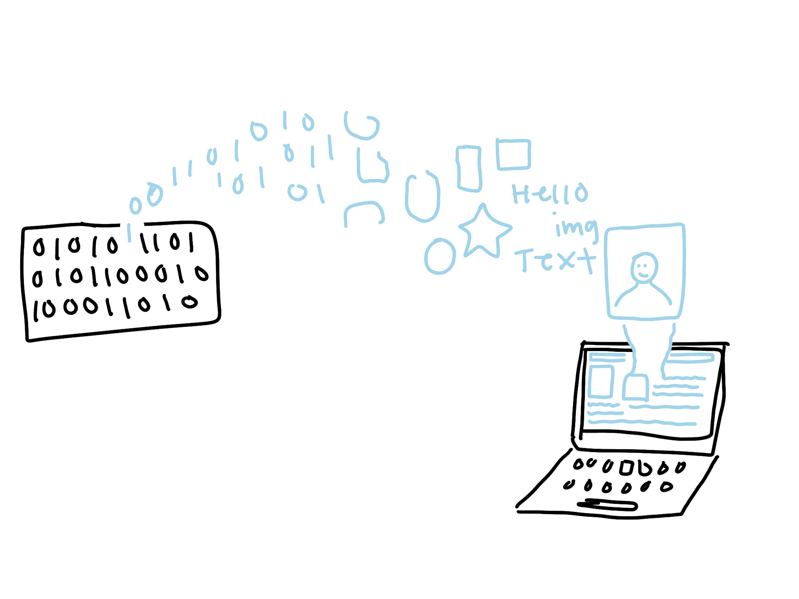
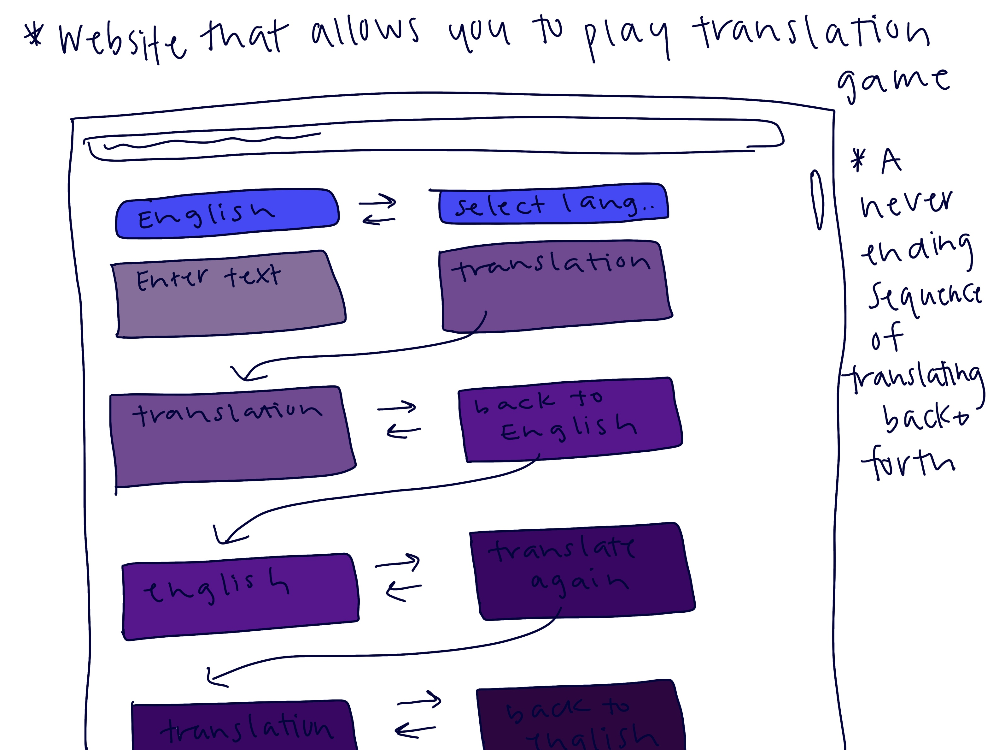

Back
Response 1

Readings response was to:
J.R Carpenter, A Handmade Web
and
Ursala K. Le Guin, A Rant on Technology
Response 2

Reading response was to:
Taeyoon Choi, Hello World!
Response 3

Reading response was to:
Mindy Seu, The Poetry of Tools